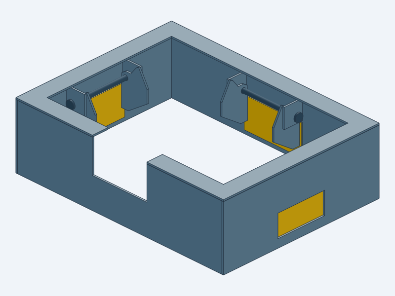
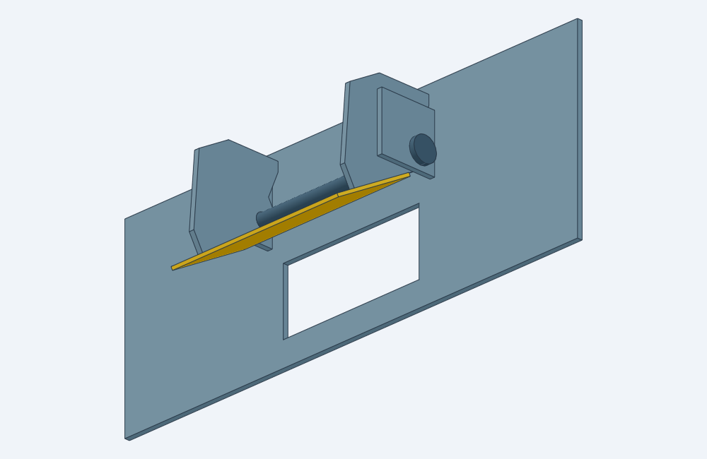

01 / CONCEPT
Fixed dividers
Fewest parts. Two fences beneath the retained cover, with permanent return paths.
8 custom cut piecesNo hinges to qualify; directional retention still needs comparison.
Engineering notebook · P3
A removable metal baffle study for the factory LNF oil pan. Compare the concepts, watch the gates move, and follow the next fit decisions.
Updated · Current published edition

Pan, pickup and mounting interfaces are still unmeasured. These files support concept review and bench development; fabrication release and engine-use acceptance remain held.
01 / The alternatives
Three alternative assemblies. Choose one BOM; the cut quantities include five undrilled mounting blanks.
01 / CONCEPT
Fewest parts. Two fences beneath the retained cover, with permanent return paths.
8 custom cut piecesNo hinges to qualify; directional retention still needs comparison.
02 / CONCEPT
A compact cage with three Improved Racing EMR-201 doors.
10 custom cut piecesReal hardware must be measured. Gold parts here are simplified proxies.
03 / CONCEPT
Three thin leaves, welded hinge cheeks, captive pins and 60° stops.
25 custom cut piecesMost owner fabrication. Joining, alignment and retention need coupon evidence.
Playback timing is illustrative. V1 shows assembly separation; V2 uses simplified purchased-door proxies; V3 shows nominal 0–60° travel. Animation does not predict opening speed or oil flow.
02 / What moves the design forward
A closer look / Nominal V3
Thickness, joining and alignment consume different parts of the available margin. These values are sensitivity calculations; unknown process errors remain unresolved.
See the calculations and assumptions ↗These are recorded project unknowns. Priorities show decision order; no physical test result is implied.
Record actual markings and registered photographs
Measure installed tilt and define transform from cage axes
Measure actual cover seats and select repeatable datums
Measure each boss separately with uncertainty
Identify threads and measure usable engagement without bottoming
Measure original seats bolt lengths and engagement
Measure multiple sections and cast obstructions
Measure cover installed height relief and deflection allowance
Measure full installed envelope without removing press-fit screen
Applicable dimensions plus dry-fit inspection through relevant positions
Record actual street or track use and baseline operating data
Use measured intended-use logs or justified conservative cases
Use applicable vehicle documentation and verify actual configuration
Record actual oil specification and measured operating conditions
Map applicable pump return data and measured representative conditions
Trial-fit complete nonmetal mock-up and verify access
Measure mock-up gaps and identify intended drain/refill paths
Measure EMR-201 unit and verify mounting instructions
Representative coupon in oil across temperature and orientation
Record supplier evidence and measure actual stock
Inspect representative welded coupon and actual assembly
Measure after forming and check free rotation plus retention
Observe controlled refill/drain test with actual oil state
Check individual and combined motion with tolerance envelopes
Inspect fitted assembly including weld and fastener envelopes
Derive from actual configuration and intended use before test
Representative exposure followed by retention crack and wear checks
Clean inspect account for hardware and demonstrate removal/service
Predefine calibrated instrumentation repeatability and abort limits
03 / The project packet
What to measure first, and which decision it unlocks.
Exact-pan sources, supported identities and hidden fit gaps.
Reproducible conditional budgets for the hinge and mounting stack.
Stock, quantities, assembly intent and unresolved release holds.
Cut-file review and supplier/process boundaries.
The project criteria for each development stage.

A smaller first build
Six existing cut pieces and one pin. Learn about welding, bore alignment, heading, friction and retention before making a complete cage. The coupon has no roof or vehicle mounts.
Coupon fabrication and inspection plan ↗Open the five-page inspection PDF ↗1:1 millimetres, one flat profile per file. Quantities and stock differ by option; use its BOM. No order or upload has been made.
04 / Construction ideas
Manufacturer sources show construction approaches. Their dimensions and performance claims do not establish Solstice fit.
16 references
simple / Solstice LNF / Ecotec
Five-bolt stamped cover over the sump, with pickup-tube relief.
Construction lesson: Keep the original cover and its proven clearance shape as the starting interface.
Manufacturer source ↗simple / Miata NA/NB 1.6 / 1.8
Laser-cut plate fits beneath the original Miata baffle plates; no moving parts.
Construction lesson: A very simple cover is a legitimate comparison baseline.
Manufacturer source ↗simple / Toyota 86 / Subaru BRZ FA20
Stainless plate with directional louvers and a large pickup opening; silicone washers supplied.
Construction lesson: Control splash while giving returning oil many downward paths.
Manufacturer source ↗simple / Subaru EJ20 / EJ25
Low-profile stainless tray with directional louvers and closed rear section, using OEM mounting locations.
Construction lesson: Simple formed metal can separate sump splash from rotating crankshaft.
Manufacturer source ↗simple / Honda K20 / K24 with RSX Type-S pump and pan
Two deep fixed dividers split sump into three regions; six studs suspend assembly below retained OEM tray.
Construction lesson: Try vertical dividers with open refill paths before adding gates.
Manufacturer source ↗medium / Miata NA / NB
Three-region divider drops below the stock cover; rubber valves admit oil toward center, with bottom return spaces.
Construction lesson: Closest architectural precedent for retaining the Solstice cover over a separate insert.
Manufacturer source ↗medium / Subaru EJ20 / EJ25
Two-piece louvered windage tray and horizontal baffle with Viton flaps allowing downward return and resisting upward slosh.
Construction lesson: One-way valves can manage vertical return, not only lateral chamber refill.
Manufacturer source ↗medium / Ecotec Gen1 / Gen2 Miata conversion
U-shaped walls place rubber flaps around a custom round pickup while leaving its tube-side route open.
Construction lesson: A three-sided collector offers directional retention with deliberate pickup access.
Manufacturer source ↗medium / GM LS1/LS6, C5 Corvette
Three hinged wall inserts surround the pickup within the two-piece factory pan.
Construction lesson: Use existing pan walls to reduce custom cage size.
Manufacturer source ↗medium / GM LS, Holley 302-3 pan
One-way doors in vertical walls beneath a horizontal plate; mounts on existing bosses.
Construction lesson: A welded cage can remain fully removable; preserve its separate OE windage tray.
Manufacturer source ↗medium / Honda F20C / F22C, S2000
Three aluminum swing doors and two slosh plates feed a containment area.
Construction lesson: A partial enclosure can use the stock casting to complete the boundary.
Manufacturer source ↗complex / Mitsubishi 4G63T, Evo IV–IX
Integrated gated sump works with removable louvered tray and crank scraper.
Construction lesson: Separate pickup retention, windage stripping and turbo oil return functions.
Manufacturer source ↗complex / Chevrolet big-block Mark IV
Three doors, two oil runners, integrated scraper and removable windage screen.
Construction lesson: Guide oil from the wider reservoir to gates; door count alone is insufficient.
Manufacturer source ↗complex / Honda K-series
Diamond road-race trap-door enclosure beneath a broad windage/slosh cover.
Construction lesson: A diamond changes gate directions but requires pickup aperture and service access.
Manufacturer source ↗complex / Nissan SR20DE(T), S13/S14/S15
Bolted metal swing-baffle modules control oil in a wider cast reservoir.
Construction lesson: Modular gates can be serviceable; width adds capacity while retaining road clearance.
Manufacturer source ↗complex / Subaru EJ20 / EJ25
Flow-through fixed baffling and greater capacity; manufacturer explicitly specifies no moving parts.
Construction lesson: A complex system can prioritize unobstructed refill and eliminate hinge failure modes.
Manufacturer source ↗